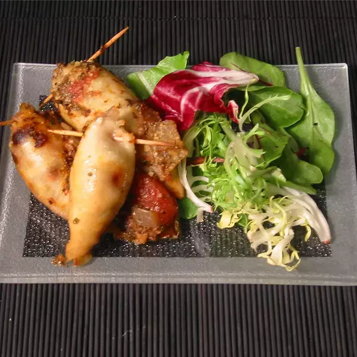

Spicy Stuffed Squid

Description
Prep: 45 mins
Cook: 1 hr 30 mins
Total: 2 hrs 15 mins
Servings:
Ingredients
- 1 cup water
- ½ cup uncooked white rice
- 3 squid
- ¼ cup raisins
- ¼ cup pine nuts
- 2 tablespoons olive oil
- 1 onion, chopped
- 3 cloves crushed garlic
- salt and pepper to taste
- 2 tablespoons olive oil
- 2 (14.5 ounce) cans stewed tomatoes
- 1 onion, chopped
- 4 cloves crushed garlic
- 2 teaspoons crushed red pepper flakes
- 2 teaspoons dried oregano
- 3 teaspoons anchovy paste
- ½ cup white wine
- salt and pepper to taste
Directions
- Preheat the oven to 350 degrees F (175 degrees C). Lightly grease one 7x11-inch baking dish.
- Bring 1 cup water in a saucepan to a boil. Stir in rice and reduce heat. Cover and simmer until liquid is absorbed, about 20 minutes.
- Cut head and tentacles from body of squid; reserve and chop tentacles. Remove quill and peel colored skin from body. Rinse under cold water and set aside.
- Combine rice, raisins, and pine nuts in a small bowl.
- Sauté 1 chopped onion and 3 cloves garlic with 2 tablespoons olive oil in a medium skillet until soft. Add chopped squid tentacles and rice mixture. Stir well and remove from heat. Season with salt and pepper.
- Sauté 1 chopped onion and 4 cloves garlic with 2 tablespoons olive oil in a large skillet until soft. Stir in red pepper flakes and oregano. Add tomatoes with juice, anchovy paste, and wine. Stir and cook over medium heat until slightly thickened. Season with salt and pepper.
- Stuff squid with rice mixture and seal ends with wooden picks. Place squid in the prepared baking dish. Pour tomato sauce on top.
- Bake in the preheated oven for 1 hour.